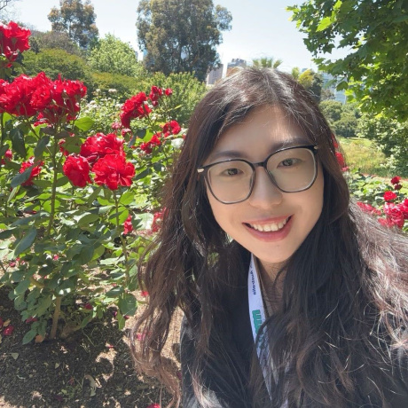

Dr.-Ing. Kunyu Peng
I work on trustworthy human-centric AI, with a focus on video understanding, human action recognition, vision-language models, and 2D–3D co-reasoning. My research spans generalizable learning, noisy labels, open-set recognition, egocentric and panoramic video understanding, and applications in healthcare, robotics, and industrial environments.
About
I received my PhD in Informatics from Karlsruhe Institute of Technology in 2024, where my dissertation focused on Towards Generalizable Deep Learning-Based Human Action Recognition. Before that, I completed my MSc in Electrical Engineering and Information Technology at KIT and a BSc in Automation at Beijing Institute of Technology.
My broader goal is to build robust and generalizable perception systems that can reason about human behavior across domains, sensors, and deployment conditions.
News
- 2026: Serving as Associated Editor for IEEE RA-L, IV, and ITSC.
- 2025: Received ICLR Notable Reviewer Award and CVPR Outstanding Reviewer Award.
- 2025: Started visiting research collaboration at INSAIT with Prof. Luc Van Gool and Prof. Danda Paudel.
- 2024: Received NeurIPS Top Reviewer Award and ICRA Best Paper Finalist recognition.
Professional Experience
Visiting Researcher · INSAIT
Collaboration with Prof. Luc Van Gool and Prof. Danda Paudel on egocentric and panoramic video understanding and action understanding.
Post-Doctoral Researcher · Karlsruhe Institute of Technology
Research on trustworthy challenges in human-centric AI, vision-language models, multi-agent systems, and 2D–3D co-reasoning.
PhD Candidate · Karlsruhe Institute of Technology
Research on trustworthy human action understanding and vision-language models.
Intern · Bosch, Leonberg
Worked on multimodal semantic segmentation and monocular depth estimation for automated vehicles.
Research Projects
SmartAGE
Deep learning-based activity analysis for elderly people, funded by the Carl-Zeiss-Foundation, in collaboration with Heidelberg University, Frankfurt University, and Mannheim University.
SFB 1574 Circular Factory
Leading the PI work package of a DFG-funded project on trustworthy human perception for reliable robot–human cooperation in circular factory environments, with the University of Stuttgart.
HeiKA-Star PACo
Research on multimodal human cognitive status estimation and reasoning from video data.
Education
PhD in Informatics · KIT
Advisor: Prof. Dr.-Ing. Rainer Stiefelhagen
MSc in Electrical Engineering and Information Technology · KIT
Advisors: Prof. Dr.-Ing. Michael Heizmann and Prof. Dr.-Ing. Christoph Stiller
BSc in Automation · Beijing Institute of Technology
Advisor: Prof. Yuan Li
Selected Publications
A short selected list for the homepage. You can later add a full publications page, BibTeX, PDFs, code, and project links.
- Wen, D.*, Qi, L.*, Peng+, K., et al. (2025). Go Beyond Earth: Understanding Human Actions and Scenes in Microgravity Environments. ICLR 2026.
- Peng+, K., Wen, D., Saquib, S.M., et al. (2026). Mitigating Label Noise using Prompt-Based Hyperbolic Meta-Learning in Open-Set Domain Generalization. IJCV 2026.
- Peng, K., Huang, J., Huang+, X., et al. (2025). HopaDIFF: Holistic-Partial Aware Fourier Conditioned Diffusion for Referring Human Action Segmentation in Multi-Person Scenarios. NeurIPS 2025 Spotlight.
- Peng, K., Wen, D., Yang+, K., et al. (2024). Advancing Open-Set Domain Generalization Using Evidential Bi-Level Hardest Domain Scheduler. NeurIPS 2024.
- Peng*, K., Fu*, J., Yang+, K., et al. (2024). Referring Atomic Video Action Recognition. ECCV 2024.
- Peng, K., Yin, C., Zheng, J., et al. (2024). Navigating Open Set Scenarios for Skeleton-Based Action Recognition. AAAI 2024.
- Xu, Y., Peng+, K., Wen, D., et al. (2024). Skeleton-Based Human Action Recognition with Noisy Labels. IROS 2024.
- Peng, K., Roitberg, A., Yang+, K., Zhang, J., Stiefelhagen, R. (2023). Delving Deep Into One-Shot Skeleton-Based Action Recognition With Diverse Occlusions. IEEE Transactions on Multimedia.
Academic Service
- 2026: Associated Editor, IEEE Robotics and Automation Letters (RA-L)
- 2026: Associated Editor, IEEE Intelligent Vehicles Symposium (IV)
- 2026: Associated Editor, IEEE Intelligent Transportation Systems Conference (ITSC)
- 2025: Associated Editor, IEEE Intelligent Vehicles Symposium (IV)
- 2023–2025: Reviewer for CVPR, ECCV, ICCV, IROS, ICRA, ICML, NeurIPS, ICLR, TPAMI, TMM, TITS, TIP, RAL, and others
Teaching & Mentoring
- SS25 · Deep Learning for Computer Vision I: Basics
- WS24/25 · Deep Learning for Computer Vision II: Advanced Topics
- WS24/25 · Seminar: Computer Vision for Human-Computer Interaction
- Mentoring PhD, Master’s, and Bachelor’s students at KIT
- Multiple supervised theses with top grades